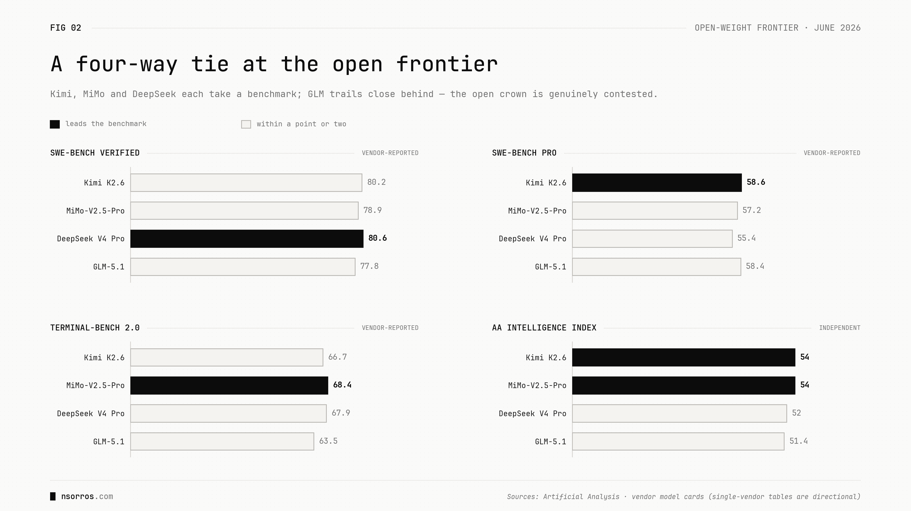

Two monarchies, open vs closed
We have two very different monopolies right now in AI. On the one hand, Anthropic leading the closed AI race with ~54% of enterprise coding spend and >60% of programming spend on OpenRouter. On the other, China — with a plethora of very competitive models in the open domain like DeepSeek, Moonshot (Kimi), Zhipu (GLM), Xiaomi (MiMo) and MiniMax — which went from ~1% of OpenRouter traffic in late 2024 to 30–45% today.
And while Anthropic is top of mind currently with the recent release of Fable, I wanted to change gears and look into the open model race, which is currently a slightly more exciting one — the lead changes hands every few weeks and the gap with the closed providers keeps narrowing.
Here are some models to keep in mind:
- DeepSeek — the most-used (largest token volume on OpenRouter, most-liked on Hugging Face). The workhorse.
- Qwen — the most-built-on (more derivative models than Google and Meta combined). The platform.
- Kimi — winning the PR war and the benchmark headline lately (twice grabbed the open lead; tied at the top right now). The one everyone's talking about, though by raw usage it's the smallest of the three.
And a couple of useful observations:
- The open-to-closed gap closed from ~13 points a year ago to ~6 (about 3 months) now.
- There are a lot of excellent open models now and they're all Chinese. Most are, to some extent, distilled from closed frontier models — worth highlighting, because it means it's likely not soon that the frontier itself switches to China.

In summary, there has never been a better time for open source AI — many powerful models to choose from, all very close to the frontier. So if you care about owning the IP to the intelligence layer, privacy, or any sort of optimisation or customisation, you have plenty of excellent choices.